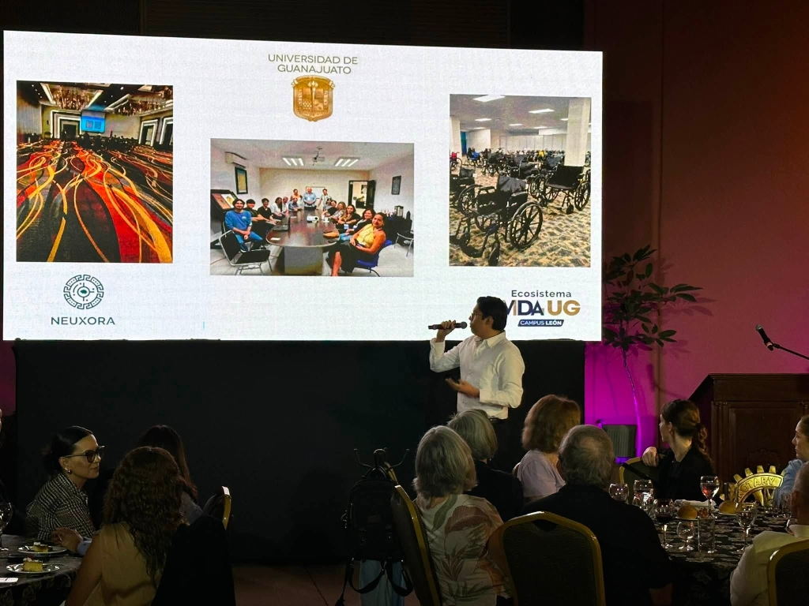

Plataformas, modelos LLM, visión artificial y datos para problemas reales.
Trabajamos como consultora de ingeniería y desarrollamos productos propios desde León, Guanajuato. Nuestro código, experimentos y proyectos están abiertos para que puedas revisarlos.
Plataforma para exámenes de regularización de idiomas.
La estamos construyendo para el Departamento de Idiomas de la Universidad de Guanajuato, Campus León, para gestionar sustentantes, aplicación de exámenes por nivel, control de intentos y seguimiento administrativo.
Registro de sustentantes: Alta y verificación de estudiantes o personas externas que solicitan examen de regularización en el Departamento de Idiomas UG Campus León.
Sistema documentado · Trabajo en campo
Registro digital de expedientes para trabajo en campo.
Reemplaza los formularios en papel por captura desde el celular con estudios socioeconómicos, medidas técnicas y fotografías vinculadas dentro del programa «200 sillas para 200 campeones».
El equipo de Neuxora con el reconocimiento recibido.

Presentación junto a Ecosistema VIDA UG.
Open Source · Visión y datos
Extraer datos desde fotografías de expedientes.
Herramienta abierta que limpia fotografías de expedientes, ordena la información clave en texto estructurado y la guarda en local lista para consultar.
Comparación de U-Net y Mamba-UNet en segmentación celular.
Probamos ambas redes neuronales con los mismos 670 pares de imágenes del conjunto público BBBC038 para ver qué cambia entre Dice, IoU, pérdida de validación, precisión y especificidad.
Portales para estudiantes, clientes o personal administrativo
Captura de formularios y expedientes desde celular o computadora
Control de permisos, sesiones activas y registro de auditoría
Reemplazo de hojas de cálculo dispersas por un sistema central
Puesta en marcha continua sin interrumpir al equipo
Qué incluye el trabajo
Flujo completo de pantallas adaptado a quienes lo usan todos los días
Interfaces cómodas en celular para trabajo en campo o ventanilla
Pruebas de funcionamiento y registro claro de acciones importantes
Inferencia de modelos LLM
Modelos de lenguaje respondiendo dentro de tus sistemas, con costo y velocidad bajo control.
Ponemos modelos de lenguaje a trabajar dentro de tus aplicaciones: elegimos el modelo, lo desplegamos en la nube o en tus propios equipos y medimos calidad, velocidad y costo.
Digitalización automática de expedientes, recetas o formularios en foto
Limpieza previa de fotografías movidas, inclinadas o con poca luz
Segmentación y medición visual sobre imágenes médicas o técnicas
Comparación objetiva entre modelos usando los mismos datos de prueba
Integración directa con la operación diaria del equipo
Qué incluye el trabajo
Pruebas comparativas claras entre opciones con el mismo conjunto de datos
Herramientas que procesan imágenes y entregan datos listos para guardar
Reporte honesto de resultados, alcance y límites de uso
Machine Learning
Modelos entrenados y probados sobre datos reales.
Antes de proponer redes neuronales o modelos complejos, comparamos opciones más sencillas para elegir la que mejor funciona según tu costo y tus datos.
Aplicación web para realizar exámenes de regularización de nivel en distintos idiomas en el Departamento de Idiomas de la Universidad de Guanajuato, Campus León.
Sistema de campoDocumentado
Sillas Rotary
Aplicación pensada para celular que reemplaza formularios en papel por captura digital de estudios socioeconómicos, solicitudes técnicas y fotografías en el programa «200 sillas para 200 campeones».
DigitalizaciónOpen Source
medscan CLI
Herramienta que prepara fotografías de expedientes, ordena la información de forma automática y la guarda localmente lista para consultar.
Plataforma webPrototipo
WebDiabetes DM
Prototipo web para llevar seguimiento de registros, cuestionarios clínicos y mensajes entre perfiles de paciente y médico.
Investigación aplicada
Probar antes de elegir una tecnología.
Cuando evaluamos modelos de visión artificial o machine learning, corremos experimentos con datos públicos y compartimos tanto en qué destaca cada opción como qué sacrifica.
Cómo organizamos el registro de sustentantes, la aplicación por idioma y nivel, el control de intentos y la auditoría para el Departamento de Idiomas Campus León.